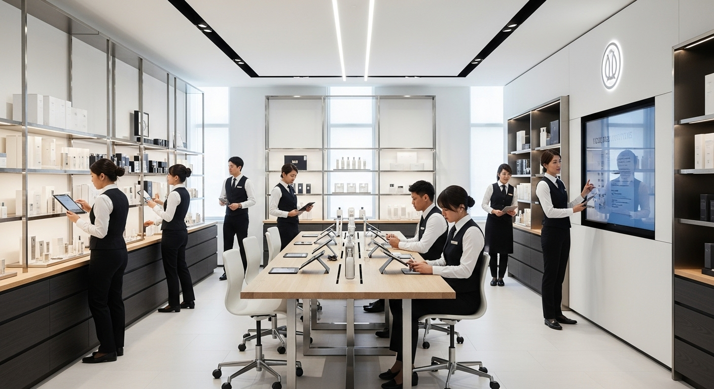
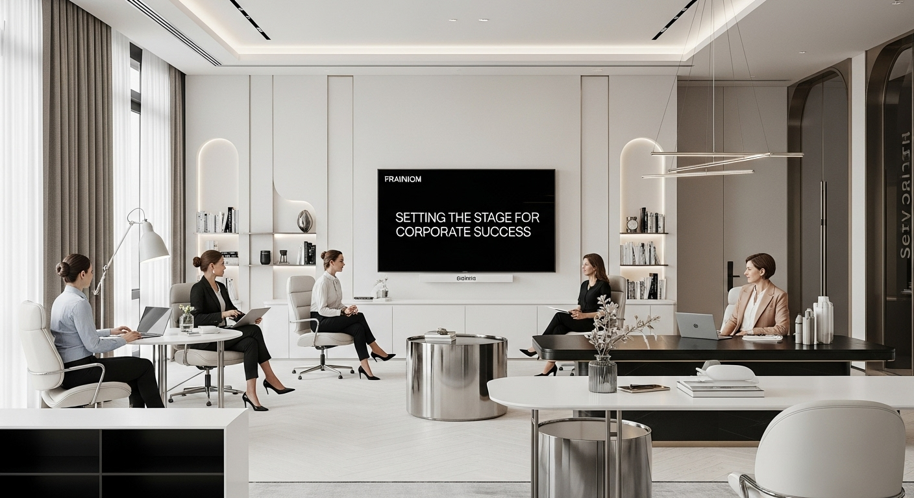

You’re leading a store today
You’re a Store Manager, ASM or experienced retail leader wondering what could come next.
Your experience can take you further
You already understand customers, teams, performance and what it takes to make a business work on the ground. Go Beyond helps you understand where that experience can take you next — across Marketing, Retail Operations and Field Leadership — and how to position yourself for the move.
Go Beyond was created for store-level retail leaders who know they’re ready to grow — even if they’re not yet sure what that next move looks like.
You’re a Store Manager, ASM or experienced retail leader wondering what could come next.
You’re ready for more, but you aren’t sure which direction fits your strengths.
You want to understand what Marketing, Retail Operations and Field Leadership actually do.
You know you have valuable experience — you’re just not sure how to communicate it for your next opportunity.
Already know where you want to go? Choose one focused path.
Still exploring? Get the full Go Beyond experience.
For retail leaders interested in customers, brand strategy, campaigns and business growth.

For people who naturally see opportunities to improve processes, performance and how the business runs.
For leaders ready to expand their impact beyond a single store.

Want to explore all three directions? Get all five modules and understand Marketing, Retail Operations and Field Leadership before deciding where you want to focus.
Real-world knowledge. Practical tools. A clearer path forward.
Understand how retail marketing works beyond the store.
See what happens behind the scenes of a retail business at scale.
Learn what changes when your impact expands beyond one store.
Explore the curriculum and learning format before deciding whether Go Beyond is right for you.
Establish the fundamental skills and mindset required for corporate leadership success — communication, strategic thinking and how to translate store experience into broader impact.
Understand how retail marketing works beyond the store.
See what happens behind the scenes of a retail business at scale.
Learn what changes when your impact expands beyond one store.
Practical tools to strengthen your job search — resume, LinkedIn, networking, interviews and staying organized throughout the process.
Learn on your own schedule.
Short knowledge checks after each module/chapter to reinforce what you learned.
Nine months to work through the material at your own pace.
Meet the people behind Go Beyond
We both built our careers in retail and experienced firsthand how difficult it can be to understand what comes after the store.
Go Beyond grew out of the lessons we learned making that transition ourselves.
We understand what it feels like to wonder what comes next.
We connect store experience with Marketing, Retail Operations and Field Leadership.
Not generic career advice adapted to retail.
Co-Founder, Go Beyond
Retail → Leadership → Broader Business
Started on the store floor and worked my way into store leadership, multi-unit responsibility, retail operations and business development. I know firsthand how hard it can be to see what comes next — and built Go Beyond to help retail leaders turn their experience into a clearer next move.
LinkedIn ↗Co-Founder, Go Beyond
Retail → Leadership → Business Growth
From the sales floor to corporate strategy, I’ve seen firsthand how much retail professionals bring to the table. I co-founded Go Beyond to help them see that potential in themselves and turn their real-world experience into their next big opportunity.
LinkedIn ↗You don’t need a five-year plan. You need a next move.
Tell us where you are in your retail career and what you’re considering next.
In a free 15-minute Path Clarity Call, we’ll help you think through the options and identify which Go Beyond path — if any — makes the most sense for you.
No pressure. No obligation to enroll.
Now decide where you want it to take you next.